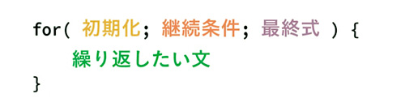

反復
- 処理を繰り返す
for文
- 繰り返し文
- 英語で輪を意味する「loop（ループ）」とも呼ばれます
- 指定した回数だけ処理を繰り返す（回数が決まった繰り返し）
- 変数「i」の初期値（「i」は、indexの意）
- 処理を１回実行するたびに、変数「i」の値をどのように変更するか

変数の値を１ずつ増やす演算子
- 「++」
- 「i++」は、「i = i + 1;」と同じ
《for文の利用》
- カウンタ変数名は「i」（indexの意）とすることが慣例です
<!DOCTYPE html> <html lang="ja"> <head> <meta charset="utf-8"> <title>for文の利用</title> <script> for (let i = 1 ; i <= 5 ; i++) { console.log( `${i}回目` ); } </script> </head> <body> </body> </html>
《実行結果》
- 変数 i に１が代入される（初期化式）
- i が５以下かどうか検証される（継続条件式）
- i の値がコンソールに表示される
- i に１加算される（増減式）
- 継続条件式の結果がfalseになるまで（2～4）を繰り返す
例題（数字の合計を求めて表示）
- DOMの操作でブラウザ上に表示
- 1以下の数字の時と全角が入力されたときには、「計算できません」と表示
ES6の場合
<!DOCTYPE html> <html lang="ja"> <head> <meta charset="UTF-8"> <title>for文を繰り返し</title> </head> <body> <h1>数字の合計を求めるプログラム</h1> <p>ボタンを押して数字を入力してください。</p> <p><button id="calculateButton">合計を求める</button></p> <h2 id="ans">ここに結果を表示</h2> <script> const result = () => { let maxNum = prompt('1以上の整数を半角数字で入力してください。'); maxNum = parseInt(maxNum); let total = 0; const element = document.querySelector('#ans'); if (maxNum < 1 || isNaN(maxNum)) { element.textContent = '計算できません。'; } else { for (let i = 1; i <= maxNum; i++) { total += i; } element.textContent = `0に入力された数字「${maxNum}」までを1から加算した合計は「${total}」です。`; } }; document.querySelector('#calculateButton').addEventListener('click', result); </script> </body> </html>
ES5の場合
<!DOCTYPE html> <html lang="ja"> <head> <meta charset="UTF-8"> <title>for文を繰り返し</title> </head> <body> <h1>数字の合計を求めるプログラム</h1> <p>ボタンを押して数字を入力してください。</p> <p><button onclick="result()">合計を求める</button></p> <h2 id="ans">ここに結果を表示</h2> <script> function result() { let maxNum = prompt('1以上の整数を半角数字で入力してください。'); maxNum = parseInt(maxNum); let total = 0; const element = document.querySelector('#ans'); if (maxNum < 1 || isNaN(maxNum)) { element.textContent = '計算できません。'; } else { for (let i=1; i<=maxNum; i++) { total = total + i; } element.textContent = `0に入力された数字「${maxNum}」までを1から加算した合計は「${total}」です。`; } } </script> </body> </html>